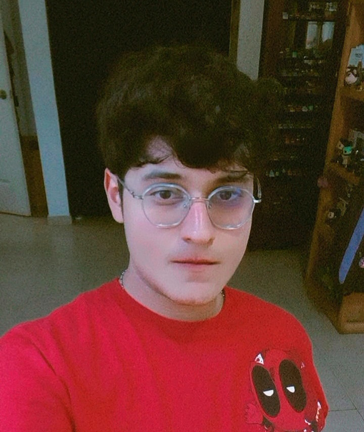

UEA: Comunicación Creativa en Cultura Digital
Licenciatura: Arte y Comunicación Digitales
Trimestre: 5° Trimestre
Este repositorio está dedicado a reunir y mostrar mis obras artísticas y algunos de los proyectos creativos en los que he trabajado. Aquí comparto diferentes expresiones de mi creatividad, como textos que me gusta escribir, dibujos que realizo para explorar ideas y emociones, y proyectos relacionados con la música, especialmente con la guitarra, uno de los instrumentos que disfruto tocar. El repositorio funciona como un espacio personal donde puedo organizar y documentar mis procesos creativos, mostrar mi evolución artística y compartir parte de lo que me inspira. También busca reflejar mis intereses, mi estilo y la forma en que combino distintas disciplinas artísticas para crear y expresar mis ideas.
El uso de las tecnologías web tiene un papel importante en mi formación universitaria porque me permite aprender, investigar y compartir mis proyectos de una manera más accesible. Aunque no soy tan bueno usando algunas herramientas tecnológicas, entiendo que es necesario aprenderlas porque estudio arte digital. Estas tecnologías me ayudan a mostrar mis trabajos, organizar mis ideas y conocer nuevas formas de crear. También me permiten mejorar poco a poco mis habilidades digitales y adaptarme a las herramientas que se utilizan actualmente en el ámbito artístico y profesional. 🎨💻